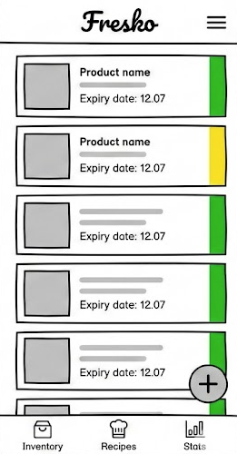
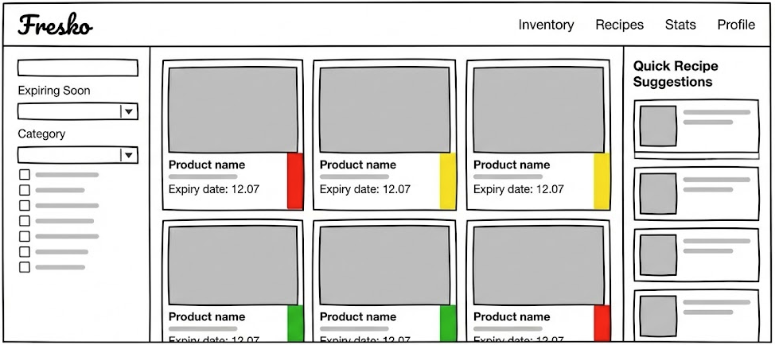

Name: José Roberto Hernández Peña
Course: WDD231 / Web Frontend Development I
Fresko
I selected the name "Fresko" (a play on the word "Fresco" which means "Fresh" in Spanish) because the primary goal of the application is to keep food fresh and reduce waste. It is short, easy to remember, and feels modern and clean. It aligns with the concept of having a fresh perspective on home resource management and self-reliance.
The purpose of Fresko is to provide families and individuals with a digital stewardship tool to manage their home food inventory. The site aims to promote self-reliance by helping users track expiration dates to prevent food waste and save money.
The application will allow users to quickly scan or input groceries, visualize their pantry stock through a color-coded "traffic light" system (Green, Yellow, Red), and provide immediate recipe suggestions for ingredients that are about to spoil. It transforms the pantry from a storage space into an active resource.
The following are questions that a typical user might ask when visiting the site:
The color palette is chosen to reflect freshness, nature, and urgency where needed. I will use a high-contrast design to ensure accessibility.
I have chosen Roboto (Sans-Serif) for headings because it is bold, geometric, and very easy to read on mobile screens. It gives the application a modern, structured feel.
I have chosen Open Sans (Sans-Serif) for paragraphs, labels, and list items. It is a "humanist" sans-serif, which makes it very friendly and legible for reading instructions or product descriptions.
Below are the wireframe sketches for the "Dashboard/Inventory" page. The design prioritizes clarity and quick visual scanning.

Mobile Layout: Focused on vertical scrolling. The "traffic light" color strip is prominent on the right side of each card for quick scanning.

Desktop Layout: Takes advantage of width to show a grid system, filters on the left, and recipe suggestions on the right.